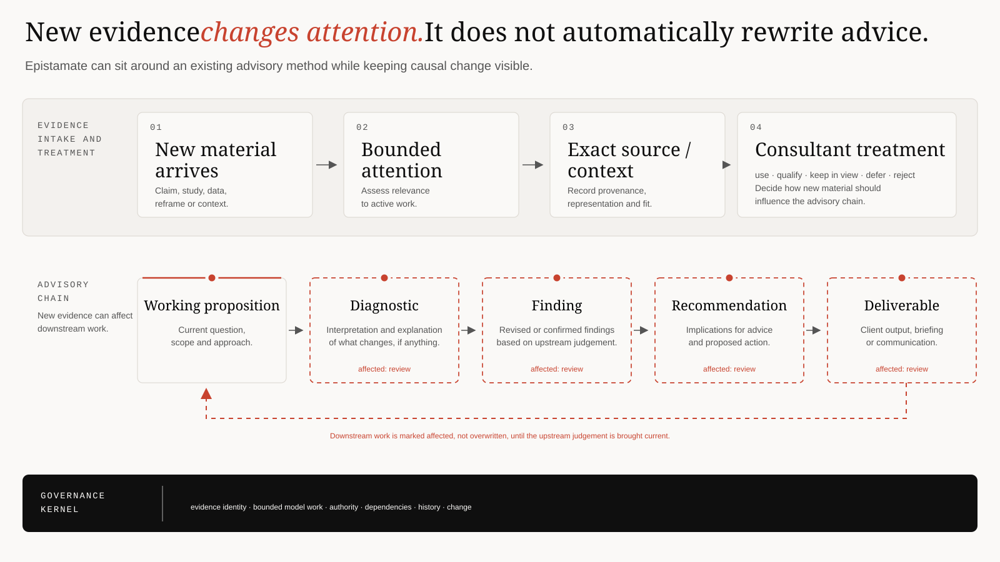

Your method
Map what already works
Preserve the organisation’s stages, propositions, diagnostics, evidence types, review gates, deliverables and decision rights.
Epistamate is not a one-size-fits-all fixed workflow. An organisation may already have stages, propositions, diagnostics, findings, recommendations, evidence types, client interview practices, review gates, approval points, deliverables and decision rights.
The design pattern is a stable governance kernel with domain-specific workflow semantics: keep evidence, model proposals, human authority, dependencies and change traceable without forcing the professional method to look like academic research.
A controlled specialist advisory-method experiment uses a synthetic engagement to test how a methodology-aware workspace behaves when new client material arrives. This is operating-concept evidence, not a client outcome claim.

The organisation-specific layer maps reusable governance capabilities to the method already in use. The shared core preserves evidence identity, bounded model work, authority, dependencies, history and change; the professional layer keeps its own stages, terminology, feedback loops and outputs.
Preserve the organisation’s stages, propositions, diagnostics, evidence types, review gates, deliverables and decision rights.
Use evidence inventory, provenance, bounded AI assistance, candidate-versus-accepted state, human authority, unresolved state, attention routing, dependencies and version history.
Define who can accept, qualify, defer, reject, approve, issue or reopen a consequential output.
Questions, evidence gaps and decision-sensitive assumptions that should be tested or explicitly accepted.
A point-in-time record that makes later updates explainable instead of revisionist.
Official records, client documents, management assertions, interviews, vendor material, public research and analyst assumptions can all matter without being treated as equivalent evidence.
Published research can expose failure modes, comparators or better tests. Client-specific conclusions still depend on the actual client evidence and an explicit transferability judgement.
Models can structure, summarize, challenge and propose. Their output does not establish evidence authority, and model agreement is not independent corroboration.
Market, technology, operational or counterparty questions where the conclusion may need to be reconstructed after the decision.
Recommendations mixing vendor claims, internal readiness, external research, control assumptions and implementation dependencies.
Work where authority, applicability, currentness and unresolved uncertainty matter as much as topical relevance.
Boundary: this is not automated audit/certification, legal/tax/engineering judgement, generic engagement-management software or a promise that AI can replace specialist professional judgement.